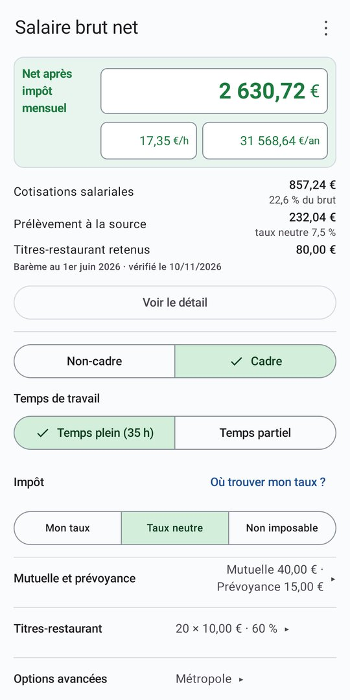
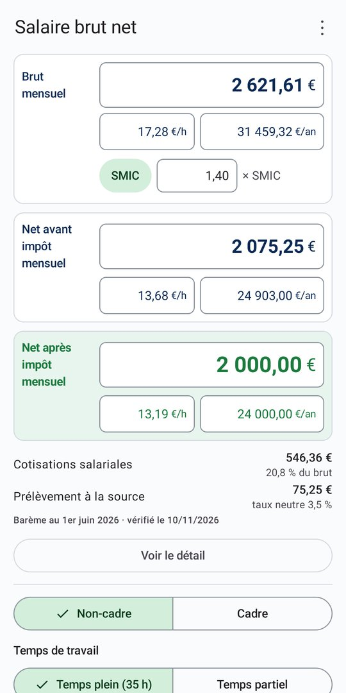
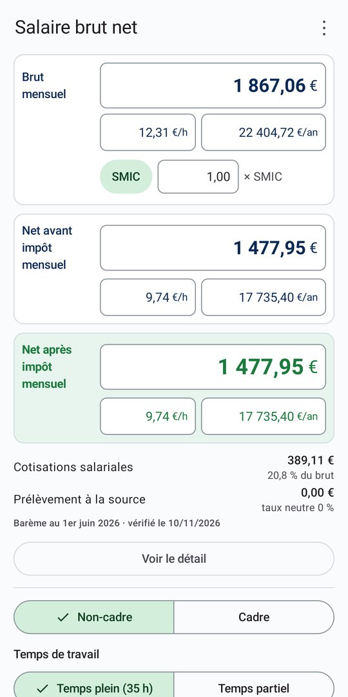
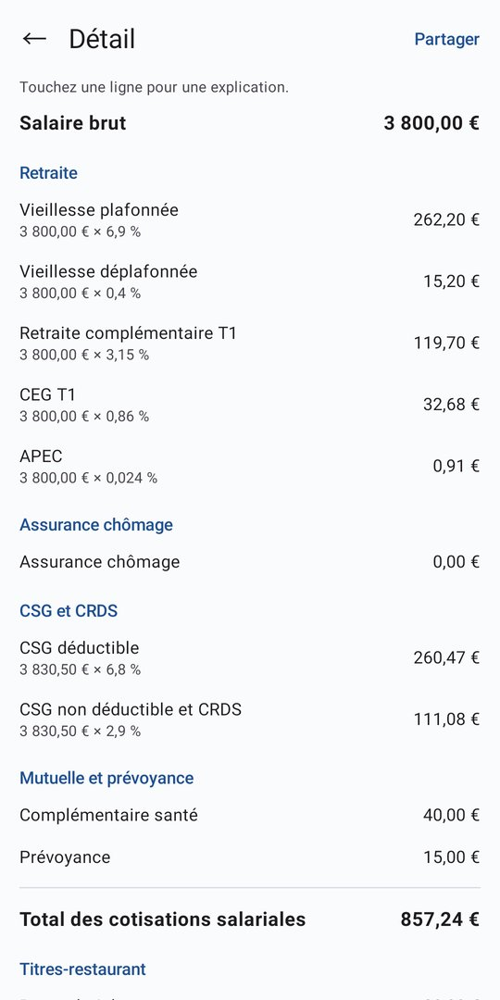
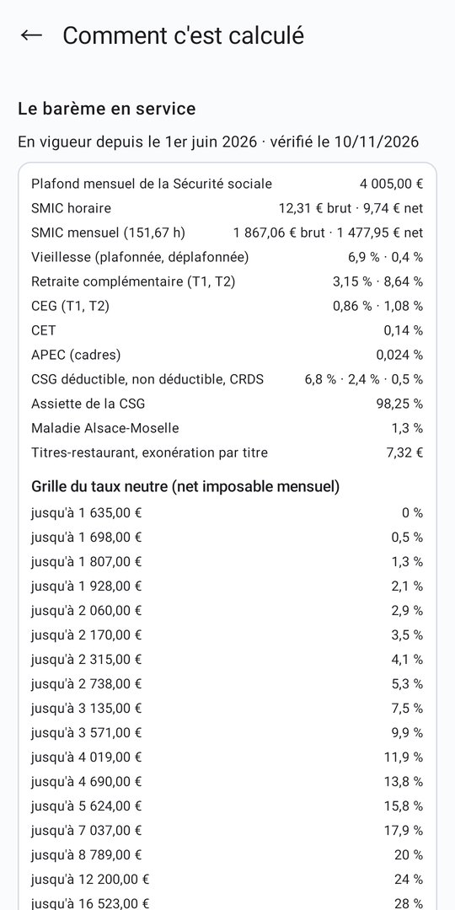

Aperçu





Brut, net : de quoi parle-t-on ?
Le brut est le salaire du contrat de travail. Le net avant impôt est ce qu'il reste après les cotisations salariales (retraite, CSG, CRDS, mutuelle…). Le net après impôt est ce qui arrive sur votre compte, une fois le prélèvement à la source retenu.
L'écart dépend de votre statut, de votre mutuelle, de votre prévoyance, de vos titres-restaurant et de votre taux d'impôt. L'application en tient compte et montre d'où vient chaque euro.
Ce que fait l'application
Neuf champs liés : brut, net avant impôt et net après impôt, à l'heure, au mois et à l'année. Tapez dans n'importe lequel, les autres suivent.
Un bouton pour partir du SMIC, le brut exprimé en multiple du SMIC, et un avertissement si le salaire saisi est en dessous.
Cadre ou non-cadre, temps plein ou temps partiel, mutuelle et prévoyance, titres-restaurant, Alsace-Moselle.
Avec votre taux personnalisé, le taux neutre calculé sur le net imposable du mois, ou sans impôt.
Chaque cotisation avec sa base et son taux, expliquée d'un simple appui. Le résumé se partage en texte.
Les taux, plafonds et le SMIC viennent d'un barème mis à jour automatiquement, sans nouvelle version de l'application. Fonctionne aussi hors ligne.
Gratuit, sans compte et sans abonnement. Ce que vous saisissez reste sur votre téléphone : rien n'est envoyé. Une bannière publicitaire discrète finance l'application.
Estimation pour un salarié du secteur privé en métropole, sur un mois type : seule votre fiche de paie fait foi. Application indépendante, sans lien avec l'administration.